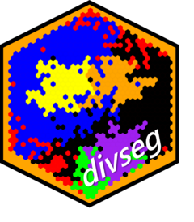

divseg 
divseg implements common measures of diversity (within-geography) and segregation (across-geographies).
Installation
You can install the released version of divseg from GitHub with:
remotes::install_github("christopherkenny/divseg")Example
The basic workflow relies on a tibble where each row represents a geography and has columns that represent some form of population data.
library(divseg)
#>
#> Attaching package: 'divseg'
#> The following object is masked from 'package:base':
#>
#> interactiondivseg comes with two example datasets. de_county contains 2010 Census data on the counties in Delaware. de_tract likewise has 2010 Census data on the tracts in Delaware.
A pretty standard function call returns a vector, where the first entry is a tibble and the second is tidyselect language.
ds_blau(.data = de_county, .cols = starts_with('pop_'))
#> [1] 0.5155228 0.5570435 0.4052769More importantly, if you specify an argument to .name, all functions are pipe-able.
de_county %>%
ds_blau(starts_with('pop_'), .name = 'blau') %>%
ds_delta(starts_with('pop_'), .name = 'delta') %>%
dplyr::relocate(blau, delta)
#> Simple feature collection with 3 features and 22 fields
#> Geometry type: MULTIPOLYGON
#> Dimension: XY
#> Bounding box: xmin: -75.78866 ymin: 38.45101 xmax: -75.04894 ymax: 39.83901
#> Geodetic CRS: NAD83
#> # A tibble: 3 x 23
#> blau delta GEOID NAME pop pop_white pop_black pop_hisp pop_aian pop_asian
#> <dbl> <dbl> <chr> <chr> <dbl> <dbl> <dbl> <dbl> <dbl> <dbl>
#> 1 0.516 0.345 10001 Kent~ 162310 105891 37812 9346 916 3266
#> 2 0.557 0.345 10003 New ~ 538479 331836 124426 46921 984 23132
#> 3 0.405 0.345 10005 Suss~ 197145 149025 24544 16954 924 1910
#> # ... with 13 more variables: pop_nhpi <dbl>, pop_other <dbl>, pop_two <dbl>,
#> # vap <dbl>, vap_white <dbl>, vap_black <dbl>, vap_hisp <dbl>,
#> # vap_aian <dbl>, vap_asian <dbl>, vap_nhpi <dbl>, vap_other <dbl>,
#> # vap_two <dbl>, geometry <MULTIPOLYGON [°]>Each function has a partner that can go inside calls to dplyr::mutate() by dropping the ds_ prefix:
de_county %>%
dplyr::mutate(herf = hhi(starts_with('pop_'))) %>%
dplyr::relocate(herf)
#> Simple feature collection with 3 features and 21 fields
#> Geometry type: MULTIPOLYGON
#> Dimension: XY
#> Bounding box: xmin: -75.78866 ymin: 38.45101 xmax: -75.04894 ymax: 39.83901
#> Geodetic CRS: NAD83
#> # A tibble: 3 x 22
#> herf GEOID NAME pop pop_white pop_black pop_hisp pop_aian pop_asian
#> <dbl> <chr> <chr> <dbl> <dbl> <dbl> <dbl> <dbl> <dbl>
#> 1 0.484 10001 Kent Count~ 162310 105891 37812 9346 916 3266
#> 2 0.443 10003 New Castle~ 538479 331836 124426 46921 984 23132
#> 3 0.595 10005 Sussex Cou~ 197145 149025 24544 16954 924 1910
#> # ... with 13 more variables: pop_nhpi <dbl>, pop_other <dbl>, pop_two <dbl>,
#> # vap <dbl>, vap_white <dbl>, vap_black <dbl>, vap_hisp <dbl>,
#> # vap_aian <dbl>, vap_asian <dbl>, vap_nhpi <dbl>, vap_other <dbl>,
#> # vap_two <dbl>, geometry <MULTIPOLYGON [°]>